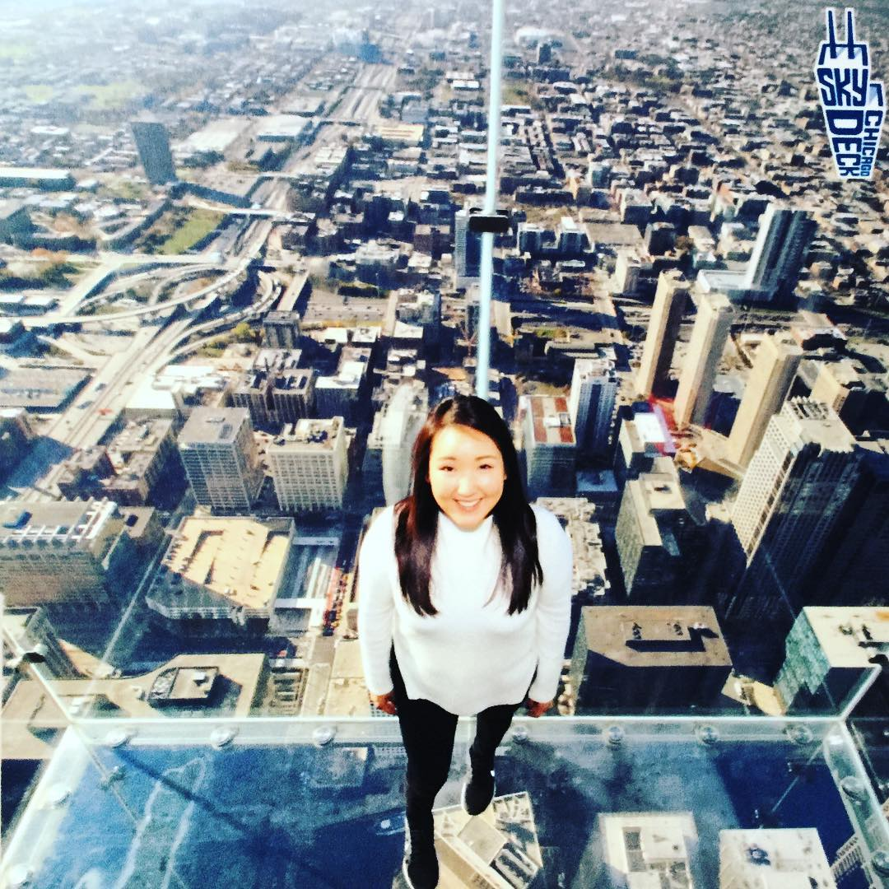

About Me
Bonjour! Thank you for visiting my portfolio! I am a full-time developer in training. Coding is quite challenging but I am hopeful that I will not only push through but continuously master this skill. I recently read an article about coding becoming a necessity. I have to agree, I think in the long run, everyone in the work force will have to have some knowledge of coding!
What do I like to do for fun? I LOVE TRAVELING. AND FOOD. Cannot forget food. One of the best things about traveling is being able to try different foods. Along with traveling and being a foodie I enjoy outdoor hiking and seeking historical venues. I have to have a balance! Calories coming in must also be burned off! Thanks for visiting my page!